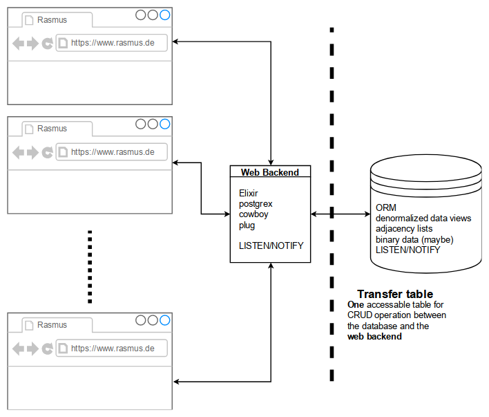
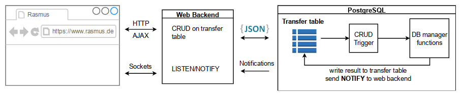

connect the dots
A few months ago, I started a little project named rasmus. It was my plan, to build a competitive CMS, which I can be proud of. During the work on rasmus, I gather a lot of different information. I stored some of them as bookmarks. Weeks later, I stared on my bookmarks, which I’ve partly stored over the years and tried to remember, why I saved these links. Some of the links were so old, that the presented information has become obsolete. I noticed, that the context is missing.
The question is, how to save the context? I took a step back, and started to work on a possible solution for that problem.
On some links, I could remember how I came up with it. I found the missing links via Google and started painting a map. As a result, I got a graph with links as nodes and the context as edges.
architecture
The architecture for rasmus looks like

The heart of rasmus is its PostgreSQL database. ramsus uses the idea of the database gate keeper. Data transformation happens within the database, as long no business logic is required.

backend
Because of the event driven approach and the desired robustness, I choose elixir as a backend language. I don’t expect massive number crunching, so I take the road with the Erlang VM.
A famous web framework in the elixir universe is the phoenix framework. There is a lot of boiler plate and mix tasks involved, so I bootstrap the backend for now and add what is needed.
Phoenix uses cowboy as a web server and so do I. With some suitable plugs the configuration is a no brainer.
Within the application behaviour you can define the web server as a child process.
Plug.Adapters.Cowboy2, scheme: :http, plug: Web.Router, options: [port: 8080]The Web.Router process uses the router plug. You can define the web endpoints of the application here.
There a two ways to access the database
pub sub database access
When you want to listen to Postgres notifications, you need to open a channel to the database.
A GenServer can look like
defmodule Core.Counter do
use GenServer
def start_link(args) do
GenServer.start_link(__MODULE__, args, name: :listener)
end
def init(pg_config) do
{:ok, pid} = Postgrex.Notifications.start_link(pg_config)
{:ok, ref} = Postgrex.Notifications.listen(pid, "rasmus")
{:ok, {pid, ref }}
end
def handle_info({:notification, pid, ref, "rasmus", payload},_) do
case Jason.decode(payload) do
{:ok , %{ "id" => id, "state" => "pending", }} -> Core.Manager.perform(id)
# additional pattern matches
_ -> Logger.warn("got unhandled notification: #{inspect(payload)}")
end
{:noreply, {pid, ref}}
end
def handle_info(_, state) do
Logger.warn("unhandled info: #{inspect(state)}")
{:noreply, state}
end
endThe notification pattern
{:notification, connection_pid, ref, channel, payload}can be matched in handle_info/2 function, which is defined in the GenServer behaviour.
simple database access
If you want to access the transfer table of the database, the module looks a little bit different.
defmodule Core.Inbound do
use GenServer
# genserver functions
def start_link(args) do
GenServer.start_link(__MODULE__, args, name: :inbound_worker)
end
def init(pg_config) do
{:ok, pid} = Postgrex.start_link(pg_config)
Logger.info("#{__MODULE__} started.")
{:ok, pid}
end
def handle_cast({:add, payload}, state) do
case Postgrex.query(state, "INSERT INTO rasmus.transfer (request) VALUES ($1)", [payload]) do
{:ok, result} -> Logger.debug("added into transfer: #{inspect(result)}")
{:error, error} -> Logger.error("adding into transfer failed: #{inspect(error)}. Tried to add #{inspect(payload)}")
end
{:noreply, state }
end
def handle_info(_, state) do
Logger.warn("unhandled info: #{inspect(state)}")
{:noreply, state}
end
endFirst you define the GenServer callbacks. When you want to use them, you have to send messages to the process.
def add(entity) do
GenServer.cast(:inbound_worker, {:add, entity})
endYou don’t expect an answer for your add function. When the database is ready, it sends a notification to the listener, that the requested task is done, and that you can fetch the result, if it is wished.
client
The client is responsible for drawing the graph. The library visjs provides functions for drawing graphs on a canvas element. Drawing graphs is not a trivial thing, so this is the best fit for now.
All other user interaction will be done with a UI library. material-ui is a mature UI library based on react. Having a react based application, create-react-app will give you a good toolchain.
example
Coming back to the bookmark context problem, I have described some parts of rasmus as links to github.

This is just a first throw. If you like the idea, you can test a static alpha version of the frontend, to make yourself a picture. You can also checkout the sources, if you like.